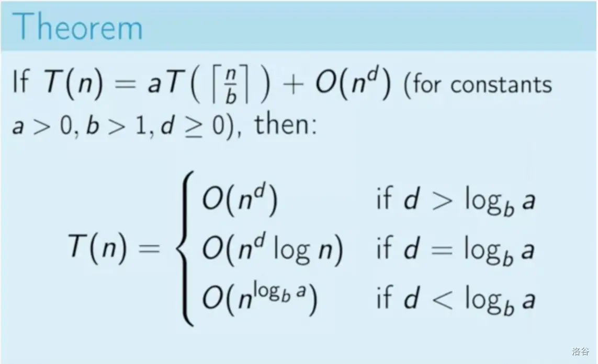

时间复杂度¶
约 2709 个字 291 行代码 预计阅读时间 17 分钟
运行时间可以直观且准确地反映算法的效率。如果我们想要准确预估一段代码的运行时间，应该如何操作呢？
- 确定运行平台，包括硬件配置、编程语言、系统环境等，这些因素都会影响代码的运行效率。
- 评估各种计算操作所需的运行时间，例如加法操作
+需要 1 ns ，乘法操作*需要 10 ns ，打印操作print()需要 5 ns 等。 - 统计代码中所有的计算操作，并将所有操作的执行时间求和，从而得到运行时间。
例如在以下代码中，输入数据大小为 \(n\) ：
根据以上方法，可以得到算法运行时间为 \(6n + 12\) ns ：
但实际上，统计算法的运行时间既不合理也不现实。首先，我们不希望将预估时间和运行平台绑定，因为算法需要在各种不同的平台上运行。其次，我们很难获知每种操作的运行时间，这给预估过程带来了极大的难度。
统计时间增长趋势¶
时间复杂度分析统计的不是算法运行时间，而是算法运行时间随着数据量变大时的增长趋势。
“时间增长趋势”这个概念比较抽象，我们通过一个例子来加以理解。假设输入数据大小为 \(n\) ，给定三个算法函数 A、B 和 C ：
下图展示了以上三个算法函数的时间复杂度。
- 算法
A只有 \(1\) 个打印操作，算法运行时间不随着 \(n\) 增大而增长。我们称此算法的时间复杂度为“常数阶”。 - 算法
B中的打印操作需要循环 \(n\) 次，算法运行时间随着 \(n\) 增大呈线性增长。此算法的时间复杂度被称为“线性阶”。 - 算法
C中的打印操作需要循环 \(1000000\) 次，虽然运行时间很长，但它与输入数据大小 \(n\) 无关。因此C的时间复杂度和A相同，仍为“常数阶”。

相较于直接统计算法运行时间，时间复杂度分析有哪些特点呢？
- 时间复杂度能够有效评估算法效率。例如，算法
B的运行时间呈线性增长，在 \(n > 1\) 时比算法A更慢，在 \(n > 1000000\) 时比算法C更慢。事实上，只要输入数据大小 \(n\) 足够大，复杂度为“常数阶”的算法一定优于“线性阶”的算法，这正是时间增长趋势所表达的含义。 - 时间复杂度的推算方法更简便。显然，运行平台和计算操作类型都与算法运行时间的增长趋势无关。因此在时间复杂度分析中，我们可以简单地将所有计算操作的执行时间视为相同的“单位时间”，从而将“计算操作的运行时间的统计”简化为“计算操作的数量的统计”，这样一来估算难度就大大降低了。
- 时间复杂度也存在一定的局限性。例如，尽管算法
A和C的时间复杂度相同，但实际运行时间差别很大。同样，尽管算法B的时间复杂度比C高，但在输入数据大小 \(n\) 较小时，算法B明显优于算法C。在这些情况下，我们很难仅凭时间复杂度判断算法效率的高低。当然，尽管存在上述问题，复杂度分析仍然是评判算法效率最有效且常用的方法。
函数渐近上界¶
给定一个输入大小为 \(n\) 的函数：
设算法的操作数量是一个关于输入数据大小 \(n\) 的函数，记为 \(T(n)\) ，则以上函数的的操作数量为：
\(T(n)\) 是一次函数，说明其运行时间的增长趋势是线性的，因此它的时间复杂度是线性阶。
我们将线性阶的时间复杂度记为 \(O(n)\) ，这个数学符号称为「大 \(O\) 记号 big-\(O\) notation」，表示函数 \(T(n)\) 的「渐近上界 asymptotic upper bound」。
时间复杂度分析本质上是计算“操作数量函数 \(T(n)\)”的渐近上界，其具有明确的数学定义。
函数渐近上界
若存在正实数 \(c\) 和实数 \(n_0\) ，使得对于所有的 \(n > n_0\) ，均有 \(T(n) \leq c \cdot f(n)\) ，则可认为 \(f(n)\) 给出了 \(T(n)\) 的一个渐近上界，记为 \(T(n) = O(f(n))\) 。
如下图所示，计算渐近上界就是寻找一个函数 \(f(n)\) ，使得当 \(n\) 趋向于无穷大时，\(T(n)\) 和 \(f(n)\) 处于相同的增长级别，仅相差一个常数项 \(c\) 的倍数。

最差、最佳、平均时间复杂度¶
算法的时间效率往往不是固定的，而是与输入数据的分布有关。假设输入一个长度为 \(n\) 的数组 nums ，其中 nums 由从 \(1\) 至 \(n\) 的数字组成，每个数字只出现一次；但元素顺序是随机打乱的，任务目标是返回元素 \(1\) 的索引。我们可以得出以下结论。
- 当
nums = [?, ?, ..., 1]，即当末尾元素是 \(1\) 时，需要完整遍历数组，达到最差时间复杂度 \(O(n)\) 。 - 当
nums = [1, ?, ?, ...]，即当首个元素为 \(1\) 时，无论数组多长都不需要继续遍历，达到最佳时间复杂度 \(\Omega(1)\) 。
“最差时间复杂度”对应函数渐近上界，使用大 \(O\) 记号表示。相应地，“最佳时间复杂度”对应函数渐近下界，用 \(\Omega\) 记号表示：
/* 生成一个数组，元素为 { 1, 2, ..., n }，顺序被打乱 */
int *randomNumbers(int n) {
// 分配堆区内存（创建一维可变长数组：数组中元素数量为 n ，元素类型为 int ）
int *nums = (int *)malloc(n * sizeof(int));
// 生成数组 nums = { 1, 2, 3, ..., n }
for (int i = 0; i < n; i++) {
nums[i] = i + 1;
}
// 随机打乱数组元素
for (int i = n - 1; i > 0; i--) {
int j = rand() % (i + 1);
int temp = nums[i];
nums[i] = nums[j];
nums[j] = temp;
}
return nums;
}
/* 查找数组 nums 中数字 1 所在索引 */
int findOne(int *nums, int n) {
for (int i = 0; i < n; i++) {
// 当元素 1 在数组头部时，达到最佳时间复杂度 O(1)
// 当元素 1 在数组尾部时，达到最差时间复杂度 O(n)
if (nums[i] == 1)
return i;
}
return -1;
}
值得说明的是，我们在实际中很少使用最佳时间复杂度，因为通常只有在很小概率下才能达到，可能会带来一定的误导性。而最差时间复杂度更为实用，因为它给出了一个效率安全值，让我们可以放心地使用算法。
从上述示例可以看出，最差或最佳时间复杂度只出现于“特殊的数据分布”，这些情况的出现概率可能很小，并不能真实地反映算法运行效率。相比之下，平均时间复杂度可以体现算法在随机输入数据下的运行效率，用 \(\Theta\) 记号来表示。
对于部分算法，我们可以简单地推算出随机数据分布下的平均情况。比如上述示例，由于输入数组是被打乱的，因此元素 \(1\) 出现在任意索引的概率都是相等的，那么算法的平均循环次数就是数组长度的一半 \(n / 2\) ，平均时间复杂度为 \(\Theta(n / 2) = \Theta(n)\) 。
但对于较为复杂的算法，计算平均时间复杂度往往是比较困难的，因为很难分析出在数据分布下的整体数学期望。在这种情况下，我们通常使用最差时间复杂度作为算法效率的评判标准。
为什么很少看到 \(\Theta\) 符号？
可能由于 \(O\) 符号过于朗朗上口，我们常常使用它来表示平均时间复杂度。但从严格意义上看，这种做法并不规范。在本笔记和其他资料中，若遇到类似“平均时间复杂度 \(O(n)\)”的表述，请将其直接理解为 \(\Theta(n)\) 。
推算方法¶
渐近上界的数学味儿有点重，如果你感觉没有完全理解，也无须担心。因为在实际使用中，我们只需要掌握推算方法，数学意义就可以逐渐领悟。
根据定义，确定 \(f(n)\) 之后，我们便可得到时间复杂度 \(O(f(n))\) 。那么如何确定渐近上界 \(f(n)\) 呢？总体分为两步：首先统计操作数量，然后判断渐近上界。
非递归程序¶
第一步：统计操作数量¶
针对代码，逐行从上到下计算即可。然而，由于上述 \(c \cdot f(n)\) 中的常数项 \(c\) 可以取任意大小，因此操作数量 \(T(n)\) 中的各种系数、常数项都可以被忽略。根据此原则，可以总结出以下计数简化技巧。
- 忽略 \(T(n)\) 中的常数项。因为它们都与 \(n\) 无关，所以对时间复杂度不产生影响。
- 省略所有系数。例如，循环 \(2n\) 次、\(5n + 1\) 次等，都可以简化记为 \(n\) 次，因为 \(n\) 前面的系数对时间复杂度没有影响。
- 循环嵌套时使用乘法。总操作数量等于外层循环和内层循环操作数量之积，每一层循环依然可以分别套用第
1点和第2点的技巧。
给定一个函数，我们可以用上述技巧来统计操作数量。
以下公式展示了使用上述技巧前后的统计结果，两者推出的时间复杂度都为 \(O(n^2)\) 。
第二步：判断渐近上界¶
时间复杂度由多项式 \(T(n)\) 中最高阶的项来决定。这是因为在 \(n\) 趋于无穷大时，最高阶的项将发挥主导作用，其他项的影响都可以被忽略。
下表展示了一些例子，其中一些夸张的值是为了强调“系数无法撼动阶数”这一结论。当 \(n\) 趋于无穷大时，这些常数变得无足轻重。
| 操作数量 \(T(n)\) | 时间复杂度 \(O(f(n))\) |
|---|---|
| \(100000\) | \(O(1)\) |
| \(3n + 2\) | \(O(n)\) |
| \(2n^2 + 3n + 2\) | \(O(n^2)\) |
| \(n^3 + 10000n^2\) | \(O(n^3)\) |
| \(2^n + 10000n^{10000}\) | \(O(2^n)\) |
递归：主定理 | Master Theorem¶
前文中都是针对迭代算法进行讨论的，通过代码能容易得出操作数量 \(T(n)\) ，从而推算出时间复杂度 \(O(f(n))\) 。但对于递归算法，我们该如何分析时间复杂度呢？
主定理: 若\(a\),\(b\) 是常数,\(f(n)\) 为额外附加值函数,\(T(n)\) 为递归式\(T(n) = aT(\frac{n}{b}) + f(n)\) \((a>0, b>1)\),则有:
-
当 \(f(n) = O(n^{\log_b a -\epsilon})\) 其中 \(\epsilon > 0\) 是一个常数(相当于 \(\log_b a > f(n)\)),则有 \(T(n) = \Theta(n^{\log_b a})\)
-
当 \(f(n) = \Theta(n^{\log_b a})\),则有 \(T(n) = \Theta(n^{\log_b a}\log n)\)
-
当 \(f(n) = \Omega(n^{\log_b a} + \epsilon)\) 其中 \(\epsilon > 0\) 是常数(相当于 \(\log_b a < f(n)\)),且对于一个常数 \(c < 1\) 和所有足够大的 \(n\) 有 \(af(\frac{n}{b}) \leq cf(n)\)(这一条件在这里可以暂时略过,但在证明时起到至关重要的作用),则有 \(T(n) = \Theta(f(n))\)
-
当 \(f(n) = \Theta(n^{\log_b a}\log^k n)\) 其中 \(k \geq 1\) 是常数,则有 \(T(n) = \Theta(n^{\log_b a}\log^{k+1} n)\)
我们一般只会碰到前三种情况，进行总结，有： 
\(T ( N ) = 2 T( N/2 ) + c N ,T(1) = O(1)\)
此时\(a=2,b=2,d=1\)，有\(d = \log_b a\)，所以是图中第二种情况，即\(T(n) = \Theta(n\log n)\)
例子 | MaxSubsequenceSum¶
虽然给的例子是Subsequence，实际上更好的说法应该是Substring。因为前者不要求连续，后者要求连续。我们接下来处理的都是连续形式的。
Given (possibly negative) integers \(A_1\), \(A_2\), …, \(A_N\), find the maximum value of \(\sum\limits_{k=i}\limits^jA_k\)
算法一
int MaxSubsequenceSum(const int A[], int N)
{
int ThisSum, MaxSum, i, j, k;
MaxSum = 0; /* initialize the maximum sum */
for (i = 0; i < N; i++) /* start from A[i] */
for (j = i; j < N; j++) /* end at A[j] */
{
ThisSum = 0;
for (k = i; k <= j; k++)
ThisSum += A[k]; /* sum from A[i] to A[j] */
if (ThisSum > MaxSum)
MaxSum = ThisSum; /* update max sum */
} /* end for-j and for-i */
return MaxSum;
}
易知合理。计算得到这个算法的复杂度为\(O(N^3)\)
算法二
int MaxSubsequenceSum(const int A[], int N)
{
int ThisSum, MaxSum, i, j;
MaxSum = 0; /* initialize the maximum sum */
for (i = 0; i < N; i++) /* start from A[i] */
{
ThisSum = 0;
for (j = i; j < N; j++)
{ /* end at A[j] */
ThisSum += A[j]; /* sum from A[i] to A[j] */
if (ThisSum > MaxSum)
MaxSum = ThisSum; /* update max sum */
} /* end for-j */
} /* end for-i */
return MaxSum;
}
算法三
int Max3(int a, int b, int c)
{
int max;
if (a > b)
max = a;
else
max = b;
if (c > max)
max = c;
return max;
}
static int MaxSubSum(const int A[], int Left, int Right)
{
int MaxLeftSum, MaxRightSum;
int MaxLeftBorderSum, MaxRightBorderSum;
int LeftBorderSum, RightBorderSum;
int Center, i;
if (Left == Right) /* Base Case */
if (A[Left] > 0)
return A[Left];
else
return 0;
Center = (Left + Right) / 2;
MaxLeftSum = MaxSubSum(A, Left, Center); // 递归求左边最大子序列和
MaxRightSum = MaxSubSum(A, Center + 1, Right); // 递归求右边最大子序列和
// 求跨越中点的最大子序列和
MaxLeftBorderSum = 0;
LeftBorderSum = 0;
for (i = Center; i >= Left; i--)
{
LeftBorderSum += A[i];
if (LeftBorderSum > MaxLeftBorderSum)
MaxLeftBorderSum = LeftBorderSum;
}
MaxRightBorderSum = 0;
RightBorderSum = 0;
for (i = Center + 1; i <= Right; i++)
{
RightBorderSum += A[i];
if (RightBorderSum > MaxRightBorderSum)
MaxRightBorderSum = RightBorderSum;
}
return Max3(MaxLeftSum, MaxRightSum,
MaxLeftBorderSum + MaxRightBorderSum);
}
我们来分析一下这个问题， 我们先把数组平均分成左右两部分。
此时有三种情况：
- 最大子序列全部在数组左部分
- 最大子序列全部在数组右部分
- 最大子序列横跨左右数组
对于前两种情况，我们相当于将原问题转化为了规模更小的同样问题。
对于第三种情况，由于已知循环的起点（即中点），我们只需要进行一次循环，分别找出左边和右边的最大子序列即可。
所以一个思路就是我们每次都对数组分成左右两部分，然后分别计算上面三种情况的最大子序列和，取出最大的即可。
举例说明，如下图：

所以\(T ( N ) = 2 T( N/2 ) + c N ,T(1) = O(1)\)，在之前的主定理部分，我们已经知道这个算法的复杂度为\(O(N\log N)\)
算法四
int MaxSubsequenceSum(const int A[], int N)
{
int ThisSum, MaxSum, j;
ThisSum = MaxSum = 0;
for (j = 0; j < N; j++)
{
ThisSum += A[j];
if (ThisSum > MaxSum)
MaxSum = ThisSum;
else if (ThisSum < 0)
ThisSum = 0;
}
return MaxSum;
}
容易分析得到，这个算法的复杂度为\(O(N)\)
常见类型¶
设输入数据大小为 \(n\) ，常见的时间复杂度类型如下图所示（按照从低到高的顺序排列）。

常数阶 \(O(1)\)¶
常数阶的操作数量与输入数据大小 \(n\) 无关，即不随着 \(n\) 的变化而变化。
在以下函数中，尽管操作数量 size 可能很大，但由于其与输入数据大小 \(n\) 无关，因此时间复杂度仍为 \(O(1)\) ：
线性阶 \(O(n)\)¶
线性阶的操作数量相对于输入数据大小 \(n\) 以线性级别增长。线性阶通常出现在单层循环中：
遍历数组和遍历链表等操作的时间复杂度均为 \(O(n)\) ，其中 \(n\) 为数组或链表的长度：
值得注意的是，输入数据大小 \(n\) 需根据输入数据的类型来具体确定。比如在第一个示例中，变量 \(n\) 为输入数据大小；在第二个示例中，数组长度 \(n\) 为数据大小。
平方阶 \(O(n^2)\)¶
平方阶的操作数量相对于输入数据大小 \(n\) 以平方级别增长。平方阶通常出现在嵌套循环中，外层循环和内层循环都为 \(O(n)\) ，因此总体为 \(O(n^2)\) ：
下图对比了常数阶、线性阶和平方阶三种时间复杂度。

以冒泡排序为例，外层循环执行 \(n - 1\) 次，内层循环执行 \(n-1\)、\(n-2\)、\(\dots\)、\(2\)、\(1\) 次，平均为 \(n / 2\) 次，因此时间复杂度为 \(O((n - 1) n / 2) = O(n^2)\) 。
/* 平方阶（冒泡排序） */
int bubbleSort(int *nums, int n) {
int count = 0; // 计数器
// 外循环：未排序区间为 [0, i]
for (int i = n - 1; i > 0; i--) {
// 内循环：将未排序区间 [0, i] 中的最大元素交换至该区间的最右端
for (int j = 0; j < i; j++) {
if (nums[j] > nums[j + 1]) {
// 交换 nums[j] 与 nums[j + 1]
int tmp = nums[j];
nums[j] = nums[j + 1];
nums[j + 1] = tmp;
count += 3; // 元素交换包含 3 个单元操作
}
}
}
return count;
}
指数阶 \(O(2^n)\)¶
生物学的“细胞分裂”是指数阶增长的典型例子：初始状态为 \(1\) 个细胞，分裂一轮后变为 \(2\) 个，分裂两轮后变为 \(4\) 个，以此类推，分裂 \(n\) 轮后有 \(2^n\) 个细胞。
下图和以下代码模拟了细胞分裂的过程，时间复杂度为 \(O(2^n)\) 。

在实际算法中，指数阶常出现于递归函数中。例如在以下代码中，其递归地一分为二，经过 \(n\) 次分裂后停止：
指数阶增长非常迅速，在穷举法（暴力搜索、回溯等）中比较常见。对于数据规模较大的问题，指数阶是不可接受的，通常需要使用动态规划或贪心等算法来解决。
对数阶 \(O(\log n)\)¶
与指数阶相反，对数阶反映了“每轮缩减到一半”的情况。设输入数据大小为 \(n\) ，由于每轮缩减到一半，因此循环次数是 \(\log_2 n\) ，即 \(2^n\) 的反函数。
下图和以下代码模拟了“每轮缩减到一半”的过程，时间复杂度为 \(O(\log_2 n)\) ，简记为 \(O(\log n)\) 。

与指数阶类似，对数阶也常出现于递归函数中。以下代码形成了一个高度为 \(\log_2 n\) 的递归树：
对数阶常出现于基于分治策略的算法中，体现了“一分为多”和“化繁为简”的算法思想。它增长缓慢，是仅次于常数阶的理想的时间复杂度。
\(O(\log n)\) 的底数是多少？
准确来说，“一分为 \(m\)”对应的时间复杂度是 \(O(\log_m n)\) 。而通过对数换底公式，我们可以得到具有不同底数的、相等的时间复杂度：
也就是说，底数 \(m\) 可以在不影响复杂度的前提下转换。因此我们通常会省略底数 \(m\) ，将对数阶直接记为 \(O(\log n)\) 。
线性对数阶 \(O(n \log n)\)¶
线性对数阶常出现于嵌套循环中，两层循环的时间复杂度分别为 \(O(\log n)\) 和 \(O(n)\) 。相关代码如下：
下图展示了线性对数阶的生成方式。二叉树的每一层的操作总数都为 \(n\) ，树共有 \(\log_2 n + 1\) 层，因此时间复杂度为 \(O(n \log n)\) 。

主流排序算法的时间复杂度通常为 \(O(n \log n)\) ，例如快速排序、归并排序、堆排序等。
阶乘阶 \(O(n!)\)¶
阶乘阶对应数学上的“全排列”问题。给定 \(n\) 个互不重复的元素，求其所有可能的排列方案，方案数量为：
阶乘通常使用递归实现。如下图和以下代码所示，第一层分裂出 \(n\) 个，第二层分裂出 \(n - 1\) 个，以此类推，直至第 \(n\) 层时停止分裂：

请注意，因为当 \(n \geq 4\) 时恒有 \(n! > 2^n\) ，所以阶乘阶比指数阶增长得更快，在 \(n\) 较大时也是不可接受的。